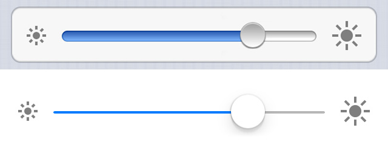

Mac OS X

Windows 8

iOS 7 vs iOS 8

One of many graphical user interface components that users have had experience with. For example, changing the volume setting on the computer or on a video streaming website.
A slider is a control element that uses a knob or lever moved horizontally to control a variable, such as volume on a radio or brightness on a screen.
by Aurora Bedford
Sliders across many different platforms have a minimum(left) value and a maximum value(right). In general, sliders can be horizontal, vertical, and radial. The main slider that we will be emphasizing on will be the horizontal slider. Graphically, the users are exposed with a bar, slider knob, and occasionaly with tick marks. However, different platforms may have different designs to their sliders to follow their human interface guidelines. Underneath, a depiction of three sliders are shown Mac OS X, Windows 8, and iOS 7 & iOS 8.
The behavior of the slider is very basic. The user is given a choice to either slide left(min) or right(max). By doing so the user can choose the proper setting they are looking for. The slider will not acitvate until the user clicks on the knob and then drags it to their desired setting. Most sliders across different platforms carry the same behavior. We will see how Mac OS X specifically stands through out the study.
Events
hover-ing over the slider knob gives you a quick description of what the slider does.unhover-ing the slider knob dismisses the quick description.click-ing the slider knob changes the tint of the knob and activates the knob to either be dragged left or right.- While
drag-ing the slider knob, the knob focuses on the tick marks.- Clicking on the
barwhere tick marks are present, quickly allows the user to set their setting without performing thedrag-ing eventrelease-ing the slider knob will set the knob to the latest value.
click-ing the slider knob changes the tint of the knob and activates the knob to either be dragged left or right.- While
drag-ing the slider knob, the knob is smoothly draggable across the bar.- Clicking anywhere on the
bar, quickly allows the user to set their setting without performing thedrag-ing eventrelease-ing the slider knob will set the knob to the latest value.
At first the user is presented with a slider that is enabled for use. When the userhover-s over the slider knob, a tool-tip pops up with a description of what the slider does.Unhover-ing the slider knob dismisses the tool-tip and returns to the enabled state. Byclick-ing the knob it changes the tint of the knob and enables the knob to becomedrag-able.Release-ing the knob returns to the enabled state. Finally, when the userclicks on thebarit automatically returns to the enabled state.
State diagrams here are similar to those of sliders wth tick marks. At first the user is presented with a slider that is enabled for use. When the userclick-s the slider knob it changes the tint of the knob and enables the knob to becomedrag-able.Release-ing the knob returns to the enabled state. Finally, when the userclicks on thebarit automatically returns to the enabled state.


There are variants of sliders which perform similar tasks that users might consider over. Since choosing a specific value/preference from a slider can be done by dragging the slider knob. We can achieve the same goal with drop down menus. With drop down menus the user is exposed with links. The user then can scroll through the links to choose the preffered link. Aside from the drop down menus, the spinner is probably the closest component to a slider. The spinner component allows you to hold the up and down keys to increase or decrease a value. The GIF provided underneath depicts how the spinner component works.

All five of the usability metrics are equally important. One of the main and the highest priorty metrics for this component is Learnability, users who are presented with sliders should not have a difficulty understanding how a slider should work. A great example of sliders that use the Learnability metric would be changing the volume on a video/music streaming interface. Users know that moving the slider horizontally or vertically will change the volume.
The usability metric that comes second would be Efficiency. Users should not expect any type of delays while using the slider. Sliders are designed in a way so that the user should not have any type of difficulty using it.
Lastly, the lowest priority metric is Satisfaction for the slider. The slider is not a component that satisfies the user in a specific way. If sliders were to be used in a video game where the user would have to use a slider to win, then Satisfaction would have been either the first or second priority metric.
Aurora Bedford in her article Slider Design: Rules of Thumb gives a great explaination on what makes a good component.
"Sliders work best when the specific value does not matter to the user, but an approximate value is good enough. Thus, Kayak may get away with using sliders for duration and arrival and departure hours, as most users will be fine with a departure time that is, say, midday, and won’t care to specify the exact moment of the departure. But whenever the exact value matters, sliders are not okay. For instance, if you had to enter quantities such as age or current weight or height within a form, a slider would not be appropriate." by Aurora Bedford
Simplicity
The only key characterstic that I think that makes a slider a good component would be simplictiy. The typical appearance along with typical behavior should be as simple as possible. The OS X Human Interface Guidelines really hit on what makes a good/simple slider.
- Ensure that the slider moves as users expect.
- In general, use a directional thumb in a linear slider with tick marks.
- In general, use a round thumb in a linear slider without tick marks.
- In general, label at least the starting and ending values in a linear slider with tick marks.
- Display tick marks when it helps users understand their choices.
The evolution of graphical user interface for Mac OS X still continues. We see how specifically the component slider has changed through out many different versions of Mac OS X. By choosing Mac OS X Leopard and Mac OS X El Capitan, we can easily tell the differences between the two. As stated above in "Key Characteristics" the OS X Human Interface Guidelines show the latest guidelines of what type of sliders are expected in the latest version of Mac OS X. Underneath we see both Mac OS X Leopard(Left) and Mac OS X El Capitan sliders.(Right)


Studying the pictures, we see the differences between the two Mac OS X platforms. The change in appearance would be the slider knobs. In Leopard the knobs look realistic which makes the user think he/she is realistically sliding a real knob horizontally. However, in El Capitan the knob is flat and simple looking.The second change in appearance would be the bar design/color. Leopard following the "realistic" feel made their slider bars look realsitic by making it darker and adding shadows to it. On the contrary, we have El Capitan's slider bar with one distinct color. Behaviorally the sliders have not changed between these two platforms. Lastly, there is no unique difference between the platforms the only difference would be the typical appearance.